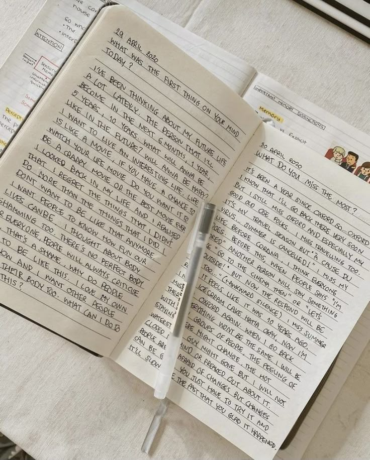
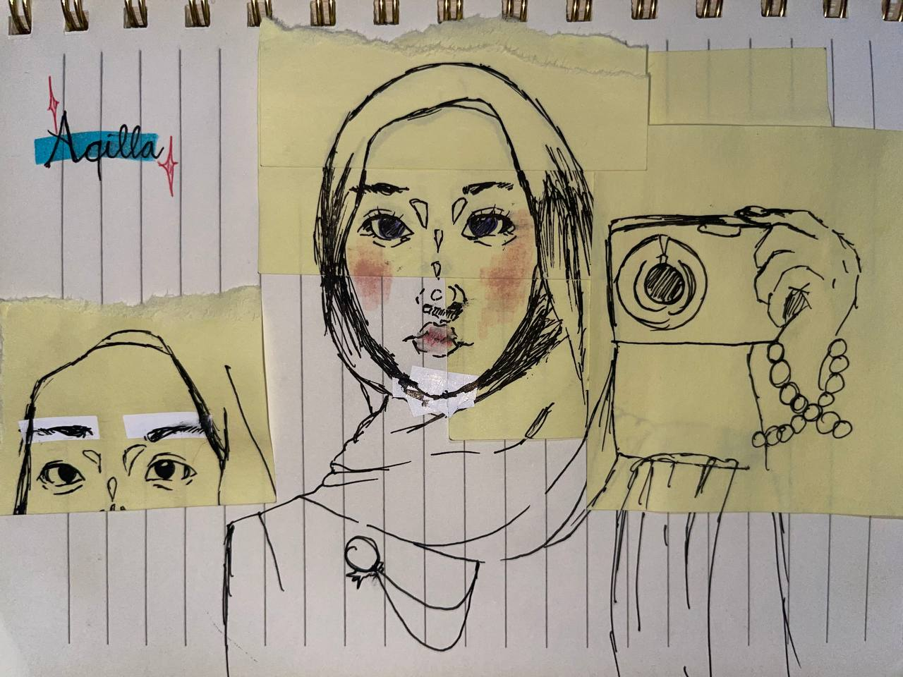
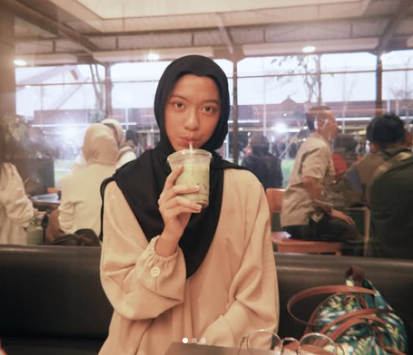
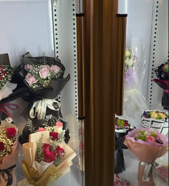

welcome to my little world
a little note
Haii! Selamat datang di digital portofolioku! ✨ Website ini aku buat sebagai tempat untuk menyimpan cerita, pengalaman, dan hasil belajarku selama Ujian Praktik Terintegrasi.
what is this?
Di sini, aku menuangkan berbagai hal yang sudah aku pelajari, terutama dalam bentuk video argumentasi yang aku buat sebagai bagian dari pembelajaran.
why I made this
Tujuan dari website ini adalah untuk menunjukkan proses belajarku, sekaligus melatih kemampuanku dalam membuat website sederhana menggunakan HTML.
what I talk about
Internship Curriculum sebagai jembatan antara pendidikan dan dunia kerja.
a wish
Aku berharap pendidikan bisa lebih berkembang dengan adanya program internship, agar siswa bisa lebih siap menghadapi dunia kerja di masa depan.
what I learned
Pengalaman internship ini membuatku lebih memahami dunia kerja secara nyata. Aku merasa menjadi pribadi yang lebih siap dan berkembang. Harapanku, program ini bisa terus berkembang dan menjadi inspirasi bagi banyak sekolah di Indonesia.
snapshots



